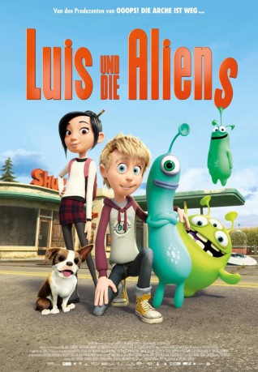

#9769 Luis & die Aliens
Alternativ: Luis & the Aliens
 
 IMDB-Wertung: 6.0 / 10
IMDB-Wertung: 6.0 / 10  Metascore: 46
Metascore: 46 
Luis ist 12 Jahre alter Schüler welcher es nicht leicht in der Schule hat, da sein Vater Ufologe ist - der von der Existens von Aliens überzeugt ist. Keiner glaubt Luis Vater, nicht einmal Luis, so ist Luis sehr überrascht als vor ihm ein UFO mit den drei Aliens Mog, Nag und Wabo eine Bruckhlandung vollbringt. Nach dem sich Luis vom Schreck erholt hat stellt er fest das keine Gefahr von den Dreien aus gaht, sie sind ehre lustig. Wie kann Luis seine neuen Feunde schützen und ihnen bei ihrer Mission helfen?
Jahr: 2018
Dauer: 85 Minuten
FSK:
Land: Deutschland Studio: Majestic FilmverleihTonspuren: DTS - ,
Untertitel:
Auflösung: 1080p (1920x1040) Größe: 4270 MB
Genre: Sci-Fi, Komödie, Abenteuer, Animation/Trick, Familie
Regisseur: Christoph Lauenstein, Wolfgang Lauenstein, Sean McCormack
Drehbuch: Wolfgang Lauenstein, Christoph Lauenstein, Jurgen Wolff, Joe Vitale, Sean McCormack
Soundtrack: Martin Lingnau, Ingmar Süberkrüb
Darsteller:
- Callum Maloney als Luis Sonntag
- Paul Tylak als Mr. Winter / Ice Cream Man / Bill
- Susie Power als Sarah
- Mary Murray als Additional Characters
 Will Forte als Nag
Will Forte als Nag- Franciska Friede als Jennifer
- Lea Thompson als Ms. Diekendaker
- Dermot Magennis als Armin Sonntag / Wabo
- Ian Coppinger als Mog
- Lucy Carolan als Jennifer
- Eoin Daly als Marlon
- Aileen Mythen als Mrs. Winter / Valentina / Ms. Diekendaker
- Simon Toal als Principal
- Danna Davis als Jill
- Eoin McCormick als Boy 1
- Oisin Murray als Boy 2
- Nuria G. Blanco als Additional Characters
- Roger Gregg als Additional Characters
- Jill Srigley als Additional Characters
- Dan Russell als Additional Characters
Datei: X:\Kinder Filme (G-M)\Luis & die Aliens (2018, FSK, 1920x1040).mkv seit 28.10.2018
Festplatte: Kinder-Filme+Trick
 Es gibt insgesamt 84 Filme in der Gruppe 'Kinder Filme (G-M)'
Es gibt insgesamt 84 Filme in der Gruppe 'Kinder Filme (G-M)'